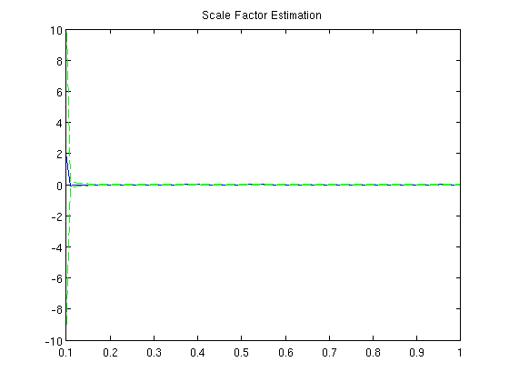
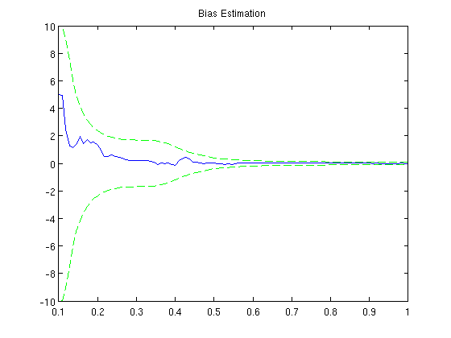

Homework 2 - Problem 3 Part D
Recursive Least Squares Estimation of gyro scale factor and bias
clear; clf; a = 2; b = 5; sigma = 0.3; omega = 2*pi; t = linspace(0.1,1,100); r = 100 * sin(omega * t); g = a * r + b + sigma*randn(100,1)'; P = 1e2*eye(2); x(:,1) = [0;0]; a_var(1) = sqrt(P(1,1)); b_var(1) = sqrt(P(2,2)); for ii=2:length(r), H = [r(ii);1]; g_hat(ii) = H' * x(:,ii-1); error(ii) = g_hat(ii) - g(ii); x(:,ii) = x(:,ii-1) - P*H*(1 + H'*P*H)^-1 * error(ii); P = P - P*H*(1 + H' * P * H)^-1 * H' * P; a_var(ii) = sqrt(P(1,1)); b_var(ii) = sqrt(P(2,2)); end figure(1); plot(t,a-x(1,:)) hold on plot(t,a_var,'g--',t,-a_var,'g--'); title('Scale Factor Estimation'); figure(2); plot(t,b-x(2,:)) hold on plot(t,b_var,'g--',t,-b_var,'g--'); title('Bias Estimation'); 